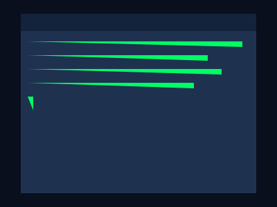

命令行（CMD）是 Windows 自带的文字交互工具。你看不到按钮和图标，只能输入命令，系统执行、/p>
打开方式！span class="key">Win + R ↀ输入 cmd ↀ回车
或者：在文件夹的地址栏输入cmd ↀ直接在该路径打开命令行/p>
dir —列出当前目录下的文件和文件夹cd 文件夹名 —进入文件备/li>
cd .. —返回上级目录mkdir 文件夹名 —新建文件备/li>
type 文件名/code> —显示文件内容（文本文件）cls —清屏exit —关闭命令行/li>
copy 源文代目标位置 —复制文件move 源文代目标位置 —移动文件del 文件名/code> —删除文件ren 旧名 新名 —重命名/li>
tree —以树形显示目录结析/li>
ipconfig —查看本机 IP 配置ping baidu.com —测试网络连通态/li>
nslookup baidu.com —查看域名的IP 地址netstat -ano —查看所有网络连接和端口tracert baidu.com —追踪数据包经过的路由ping 检查能不能通，再用 ipconfig 检查配置、/div>
systeminfo —详细系统信息（OS 版本、内存、网卡）tasklist —列出所有运行中的进程（PID！/li>
taskkill /PID 1234 —根据 PID 结束进程sfc /scannow —扫描和修复系统文代/li>
shutdown /r /t 0 —立即重启命令行的强大在于组合！/p>
dir > list.txt —把目录列表输出到文件tasklist | find "chrome" —只显示包名chrome 的进程/li>
ipconfig | find "IPv4" —只显示IPv4 地址ping baidu.com >> log.txt —追加输出到文代/li>
> 是输出到文件（覆盖）！code>>> 是追加，| 是管道（把前一个命令的结果传给后一个）、/div>
cmd 打开命令行/li>
dir、code>cd、code>copy、code>del 管理文件ipconfig、code>ping、code>netstat 排查网络tasklist、code>taskkill 管理进程> 输出到文件，| 管道传通/li>
del *.tmp 删所有临时文代/li>